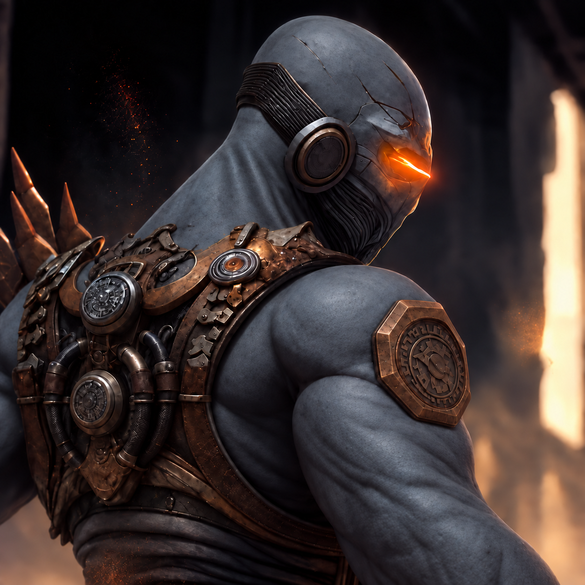

Things I’ve built.
01 / Web productVisit site ↗
Consensus Health
See where Bitcoin people actually stand on proposals, mapped out as BIP galaxies.
02 / Network observerWatch the chain ↗
Knots Fork Observer
Keep an eye on Knots maturity-rule forks, the branches nodes see, and what peers are running.
03 / WritingRead on Medium ↗
Don’t trust. Verify.
My take on the idea at the heart of Bitcoin—and why replacing trusted people with verifiable rules still matters.